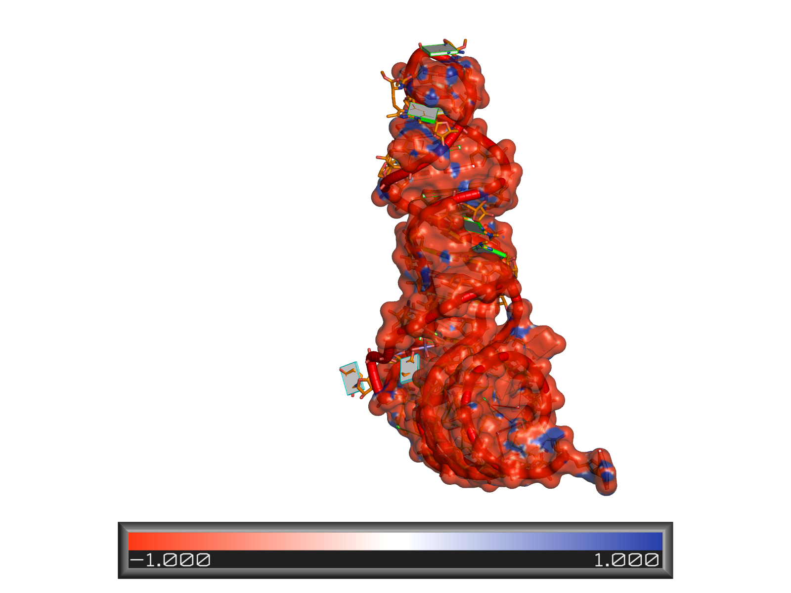
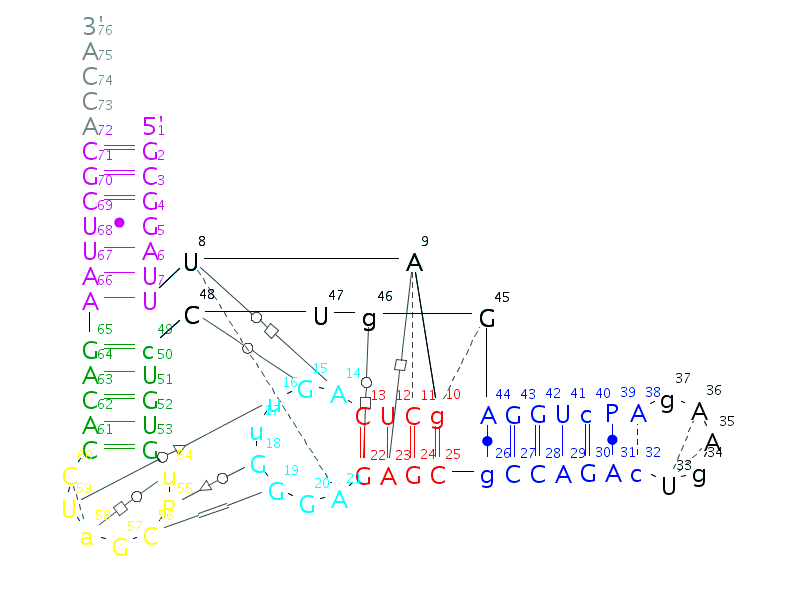
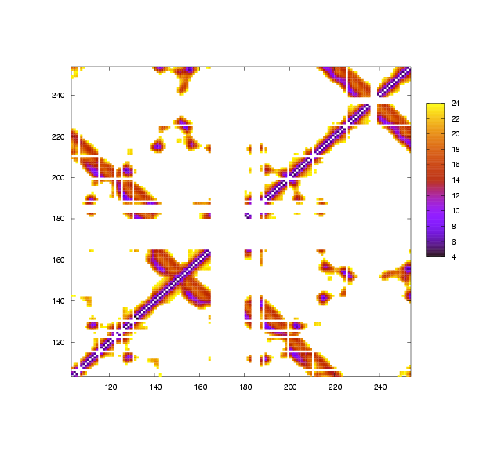

tRNA-Phe (1ehz)
First high resolution X-Ray structure, fully elucidated by Kim and Klug independently in 1974.
Structure Resolution = 1.93
Number of Nucleotides = 76
Total Number of Base-pairs = 30
W-C Base-pairs = 20
Non-canonical Base-pairs = 10
Number of Helices = 3

Electrostatic potential map calculated using APBS (Baker Group), combined with 3DNA
block representation in raster3D format, displayed in pymol.

Secondary Structure using s2s, and rnaview for leontis-westhof annotation.
tRNA-Ile (1qu3)
Isoleucine tRNA synthetase with tRNA-Ile and Mupirocin, 1999, Steitz group.
Structure Resolution = 2.90
Number of Nucleotides = 75
Total Number of Base-pairs = 29
W-C Base-pairs = 20
Non-canonical Base-pairs = 9
Number of Helices = 3
DNA-RNA four way junction (1egk)
Number of Nucleotides =
Total Number of Base-pairs =
W-C Base-pairs =
Non-canonical Base-pairs =
Number of Helices =
P4-P6 Self Splicing Intron (1gid) and intron splicing intermediate Azoarcus sp. pre-tRNA-Ile group I intron (1zzn)
Number of Nucleotides =
Total Number of Base-pairs =
W-C Base-pairs =
Non-canonical Base-pairs =
Number of Helices =

Image of Contact map.
Hammerhead Ribozyme (1hmh)
Number of Nucleotides =
Total Number of Base-pairs =
W-C Base-pairs =
Non-canonical Base-pairs =
Number of Helices =
Large Ribosomal Subunit of Haloarcula marismortui (1jj2)
Number of Atoms = 61617
Number of Nucleotides = 2876
Total Number of Base-pairs = 1153
W-C Base-pairs = 735
Non-canonical Base-pairs = 418
Number of Helices = Depends
Ribosome
70S Prokaryotic 4.32 x 10^-18 g or 2600 KDa
RNA:Protein 2:1
Around 21 aa per second are translated